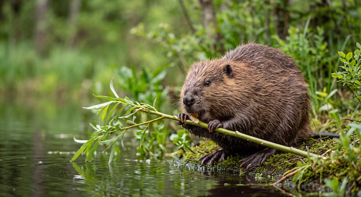

Кто такие бобры?
Бобры — род млекопитающих из отряда грызунов, знаменитые своим умением строить плотины и хатки. Это эндемики Северного полушария, обитающие преимущественно в лесной зоне.
Бобры — вторые по величине грызуны в мире после капибары: длина тела до 1 м, масса до 30 кг.

Ключевые особенности
Зубы растут всю жизнь и покрыты железосодержащей оранжевой эмалью.
Хвост — руль, опора и сигнал тревоги одновременно.
Плотина может достигать 100 м в длину и 3 м в высоту.